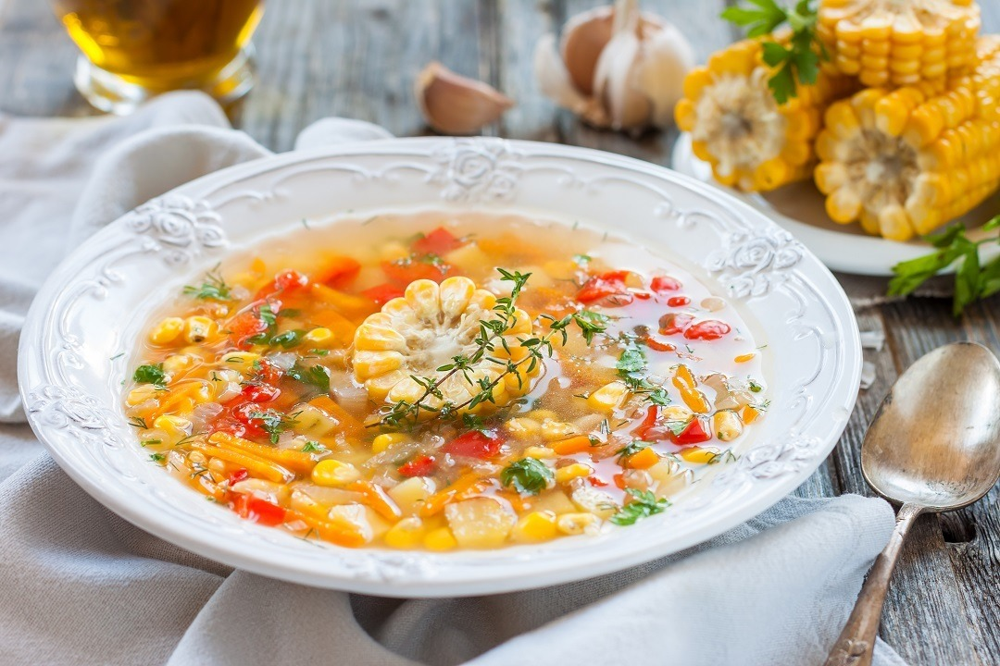

Sejarah dan Makna
Binte Biluhuta adalah makanan khas dari Gorontalo yang juga dikenal dengan nama "Millet Soup" atau "Sup Jagung." Nama "Binte" berarti jagung, sedangkan "Biluhuta" berarti disiram. Hidangan ini terkenal karena rasanya yang unik dan kaya akan rempah-rempah.

Ciri Khas Binte Biluhuta
- Berbahan utama jagung manis yang dipadukan dengan ikan atau udang.
- Kuahnya memiliki rasa perpaduan manis, pedas, dan asam.
- Disajikan dengan taburan kelapa parut, daun kemangi, dan bawang goreng.
- Biasanya dikonsumsi sebagai makanan sehat dan bergizi tinggi.
Fungsi dan Tujuan
Binte Biluhuta memiliki peran penting dalam budaya masyarakat Gorontalo, antara lain:
- Sebagai hidangan tradisional yang diwariskan secara turun-temurun.
- Digunakan dalam acara adat dan perayaan keluarga.
- Memiliki nilai gizi tinggi, terutama untuk menjaga daya tahan tubuh.
Keunikan Binte Biluhuta
Ada beberapa hal yang membuat Binte Biluhuta menjadi hidangan khas yang istimewa:
- Rasa unik yang merupakan kombinasi dari manis, pedas, dan asam.
- Menggunakan jagung sebagai bahan utama, berbeda dari sup pada umumnya.
- Memiliki variasi dengan tambahan ikan laut atau udang untuk cita rasa lebih kaya.